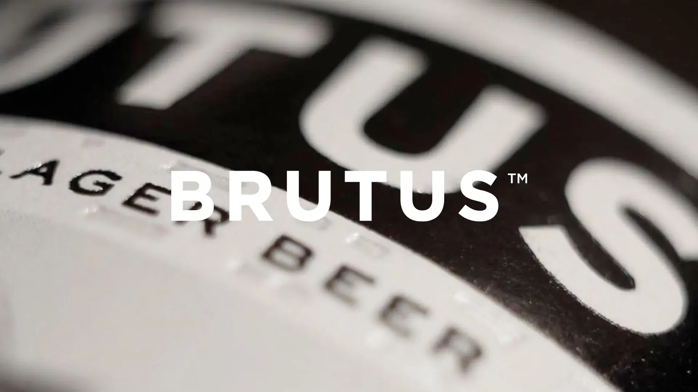
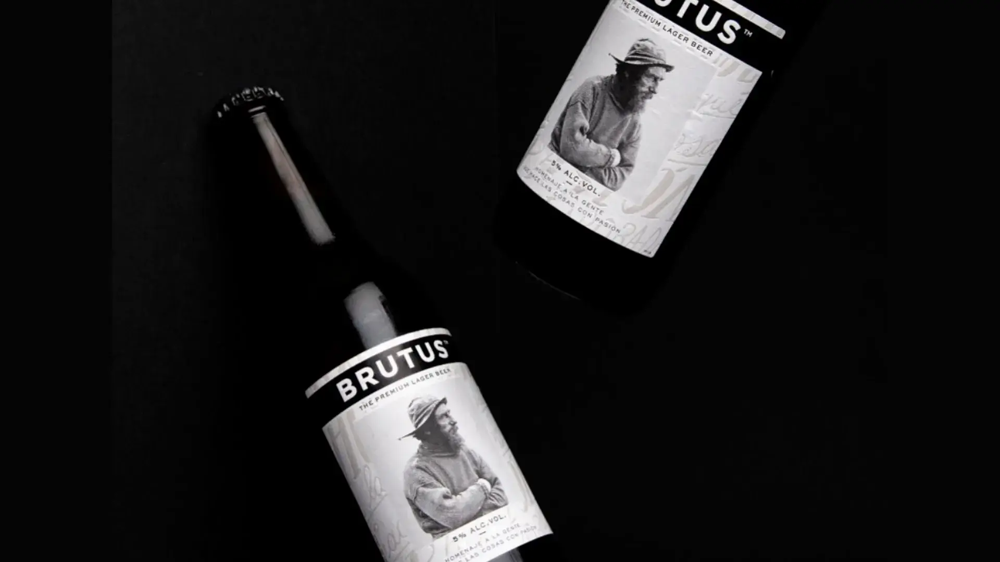
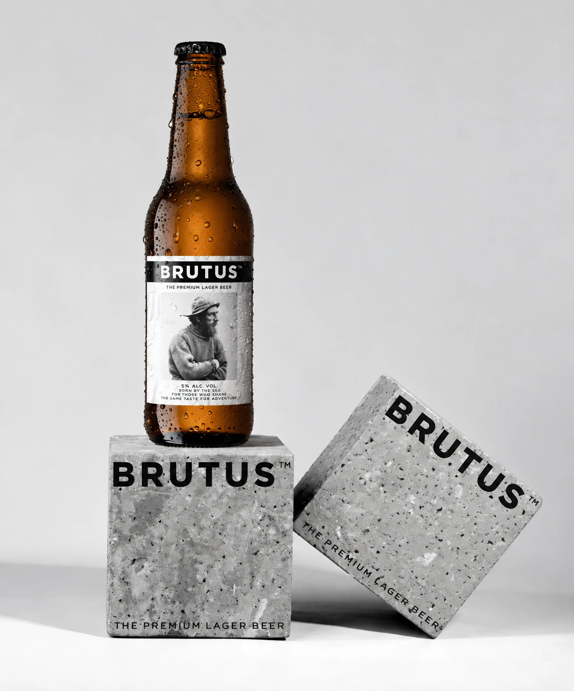
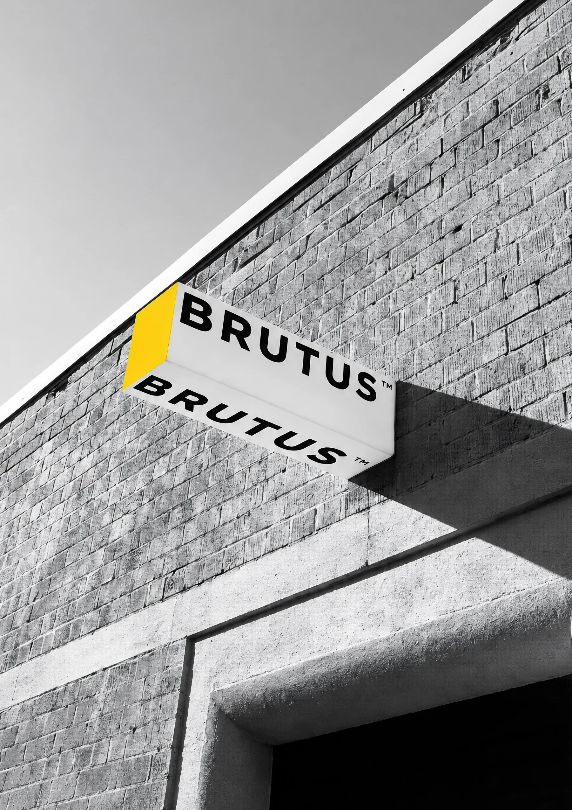
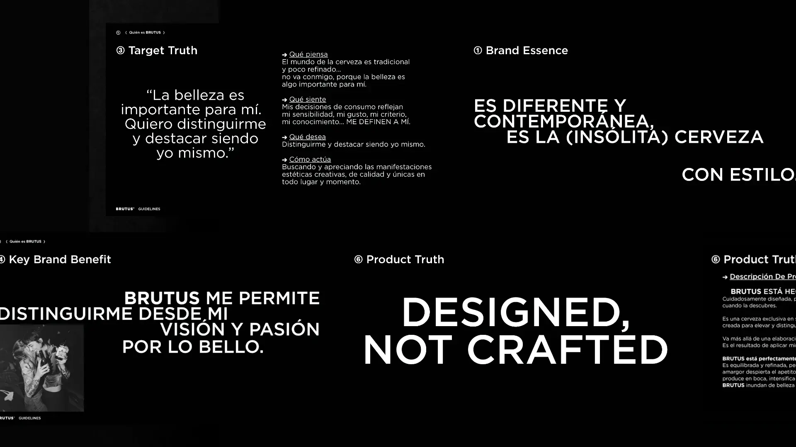
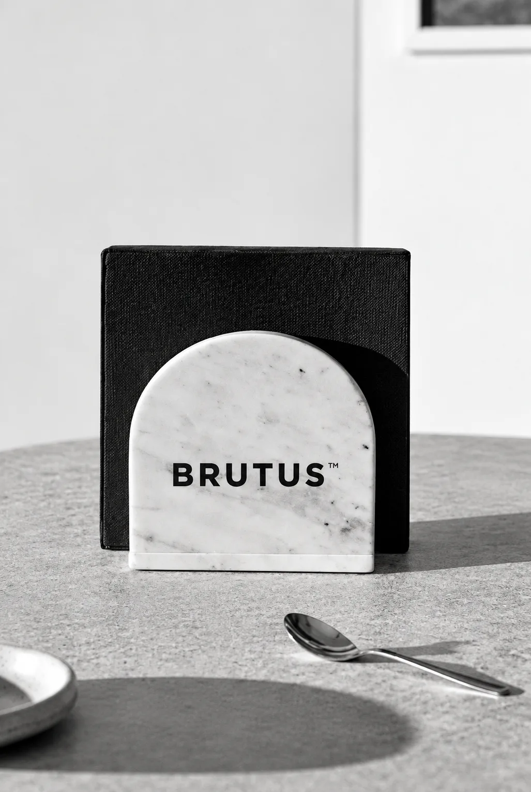
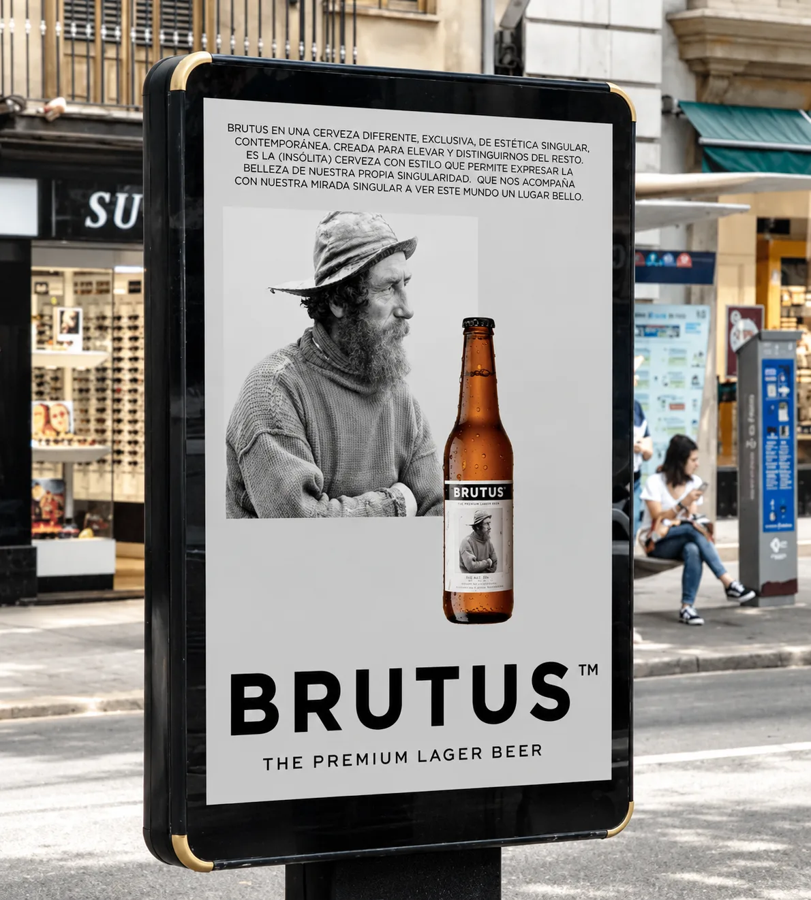
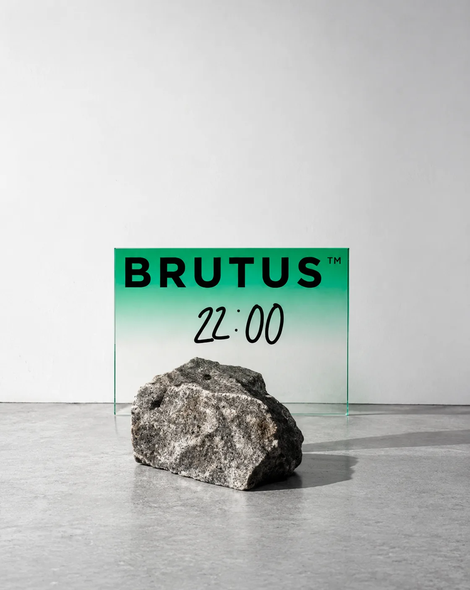
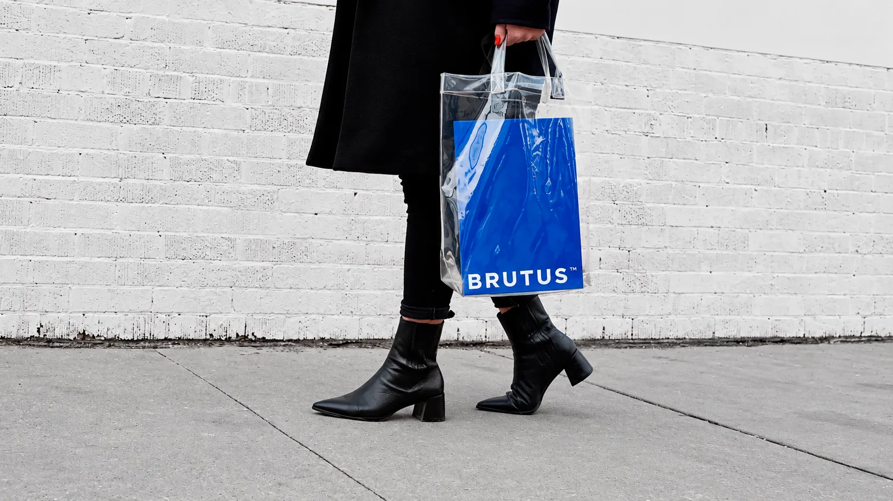

Brutus : refinar una identidad para crecer sin perder su esencia

Cómo dar recorrido a una marca con una personalidad muy definida
Nacida en Sitges en 2017, Brutus llegó a un mercado cervecero con grandes marcas ya consolidadas y apostó desde el principio por una personalidad propia, ligada al diseño, la estética y la belleza. En 2023, ya contaba con una identidad reconocible, pero su expansión requería ordenar y afinar ese universo para ganar foco, coherencia y recorrido.
El reto era definir un marco capaz de preservar la esencia de Brutus y, al mismo tiempo, establecer unas bases claras para seguir construyendo la marca en el futuro.

De la esencia de Brutus a un sistema de marca
Abordamos el proyecto en tres fases, construyendo una visión global de la marca que conectara lo que Brutus es con la forma en que debía expresarse.
El primer paso fue revisar su territorio de marca y replantear el concepto de belleza desde una mirada más inclusiva y cercana al consumidor. De ahí nació una nueva plataforma basada en una idea:
“El mundo es un lugar bello para aquellos que saben mirarlo”.
A partir de esta nueva mirada, definimos los principales elementos estratégicos de la marca y los trasladamos a un universo visual propio y reconocible.
El resultado: Una estética contemporánea y cosmopolita, basada en blancos y negros, combinada con pinceladas de color; una fotografía sofisticada pero menos elitista; y materiales y texturas que aportaban singularidad desde el diseño.



Una marca preparada para seguir creciendo
Como última fase, desarrollamos un Marco Estratégico de Activación que definía los territorios, activos y palancas que Brutus debía trabajar, junto con ejemplos concretos de acciones, contenidos y experiencias.
Así, el proyecto no solo definió cómo debía verse y expresarse Brutus, sino también cómo podía llevar su nueva identidad a la práctica de forma coherente en futuros planes de marketing.



